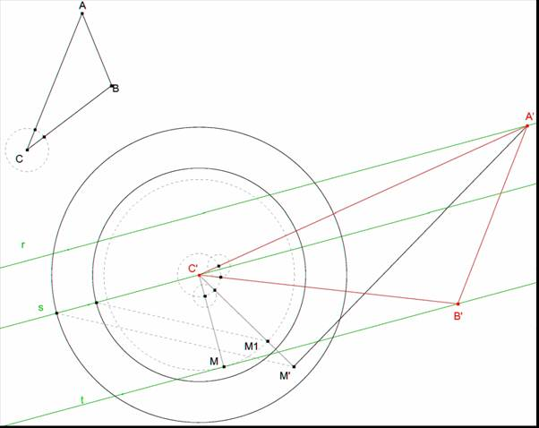
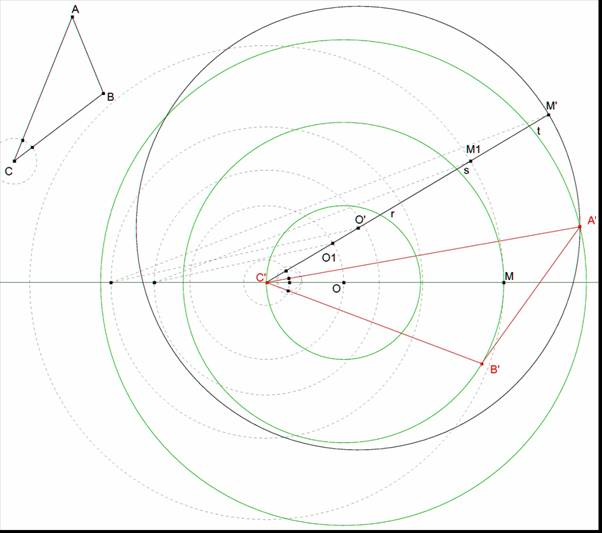

El problema 99 forma parte de un tipo más general de problemas que se resuelven con las transformaciones del grupo euclídeo en le espacio. (Ver, por ejemplo, R, Deltheil & D. Caire Compléments de Géométrie. Existe una reimpresión de Jacques Gabay de la edición de J.-B. Baillière et Fils Éditeurs de 1951).
Si por un punto dado O se llevan rectas a los punto de una curva dada; C; y si hacemos girar estas rectas un ángulo v alrededor de O, y al mismo tiempo variamos su longitud según una razón dada f, se obtiene una nueva curva C', como lugar geométrico del extremo de las rectas que así se han transformado.
Esta nueva curva es semejante a C; pues podemos descomponer la transformación de la manera siguiente:
en premier lugar, rotación de la curva primitiva de centro O y ángulo v,
en segundo lugar, homotecia de razón f y centro O.
El centro O es un punto doble de la transformación (imagen de sí mismo)
Conociendo el centro de rotación O, el ángulo de giro v y la razón f, se puede transformar un sistema cualquiera compuesto de rectas y arcos de círculo, empleando solamente regla y compás.
Para transformar una recta, transformaremos dos puntos de la misma; o un punto singular adecuado.
Para transformar un círculo bastará con la transformada del centro y de un punto de la circunferencia.
Por medio de lo anterior podemos abordar el siguiente PROBLEMA GENERAL:
Enunciado Trazar un triangulo, semejante a otro dado, de manera que uno de sus vértices esté en un punto dado y que los otros dos se encuentren sobre dos curvas dadas.
Solución Tomamos el punto dado como centro de rotación y hacemos rotar una de las curvas en torno a él, de forma que el ángulo de rotación sea el ángulo del triángulo cuyo vértice esté en O y la razón sea la de los lados adyacentes a este ángulo; la curva así transformada cortará la otra curva dada en los puntos donde debe caer el segundo vértice.
CASOS PARTICULARES:
Problema 99. Construir un triángulo cuyos vértices están en tres paralelas dadas y que sea semejante a otro triángulo dado.
García Ardura (1948): Problemas gráficos y numéricos de geometría (Originales en su mayor parte). Madrid. (pág 135)
Variante. Construir un triángulo cuyos vértices están en tres círculos concéntricos dados y que sea semejante a otro triángulo dado.
|  |
Sea ABC el triángulo dado y r, s, t las tres paralelas.
Fijamos C’ sobre s.
Hallamos el transformado de un punto M de t.
Por C’ la perpendicular a t y hallamos M en la intersección.
Rotamos t en torno C’ un ángulo <ACB. Hallamos M1.
Luego la homotecia de razón CA/CB. Obtenemos M’.
t’ es la perpendicular por M’ a C’M’.
La intersección de r y t’ nos da A’.
El giro de C’A’ en torno a C’ nos da B’ en la intersección con t.
Obtenemos el triángulo A’B’C’.
|  |
Sea ABC el triángulo dado y r, s, t los tres círculos concéntricos.
Fijamos C’ sobre r.
Hallamos el transformado del centro O, O’
Rotamos O en torno a C’ un ángulo < ACB. Obtenemos O1.
Luego homotecia de centro C1 y razón CA/CB. Hallamos O’.
Hallamos el transformado de un punto M de s.
Rotamos M en torno a C’ un ángulo < ACB. Obtenemos M1.
Luego homotecia de centro C1 y razón CA/CB. Hallamos M’.
El círculo de centro O’ y que pasa por M’ es s’, transformado de s.
La intersección de s’ y t nos da A’. El giro de C’A’ en torno a C’ nos da B’ en la intersección con s.
Obtenemos el triángulo A’B’C’.